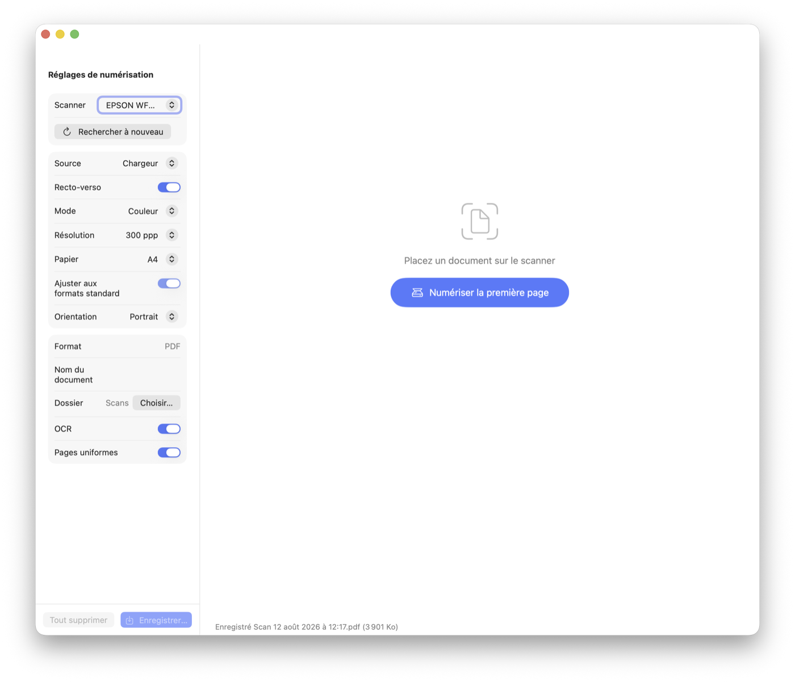

Du papier au PDF, en un clic
PaperDrop transforme vos documents papier en PDF compacts et consultables. Un gros bouton, environ 20 Ko par page, et la reconnaissance de texte faite sur votre Mac.

Numériser sans se compliquer la vie
Numérisez une page, puis quelques autres, remettez-les dans l'ordre, nommez le document et enregistrez.
PDF ultra-légers
Les pages sont converties en noir et blanc net, nettoyées des bords et poussières, puis compressées : environ 20 Ko par page A4 à 300 ppp.
Texte consultable
Une couche de texte invisible, générée par la reconnaissance de texte d'Apple, rend chaque PDF trouvable dans Spotlight et Aperçu.
Formats détectés
A4, A5, A6 ou Letter reconnus automatiquement, ou format imposé. Les documents de plusieurs pages peuvent avoir des pages uniformes.
Mode photo
Pages en niveaux de gris pour les photos, le crayon et tout ce que le noir et blanc abîmerait.
Scanners récents et anciens
Compatible avec les scanners reconnus par macOS (y compris réseau) et avec d'anciens scanners USB grâce à SANE, inclus dans l'application.
Chargeur et recto-verso
Numérisation depuis la vitre ou le chargeur, recto-verso, choix de la résolution et du dossier d'enregistrement.
Vos documents restent chez vous
La numérisation, le nettoyage et la reconnaissance de texte se font entièrement sur votre Mac. Aucun service en ligne, aucun outil externe.
Foire aux questions
Mon scanner est-il compatible ?
Tous les scanners pris en charge par macOS fonctionnent, y compris les scanners réseau (AirScan/eSCL). Pour les anciens scanners USB dont les pilotes ne sont plus maintenus, PaperDrop embarque SANE : rien d'autre à installer.
Où sont enregistrés mes PDF ?
Par défaut dans le dossier Documents/Scans. Vous pouvez choisir un autre dossier dans les réglages de numérisation.
Puis-je numériser des photos ?
Oui. Le mode photo conserve les niveaux de gris, adaptés aux photos et aux dessins.
D'où vient PaperDrop ?
PaperDrop est basé sur le projet open source de Ben Squire (licence MIT), adapté et traduit en français.
Prêt à numériser ?
Téléchargez PaperDrop et glissez-le dans Applications. Compatible macOS 13 (Ventura) et versions ultérieures.